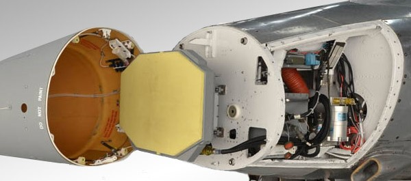

2015-02-08 02:33:00
2014年十二月，马来西亜发生大规模而且相当严重的水灾。水退之后，灾区仍普遍停电停水达数周之久，马来西亜总理却忙着到夏威夷和欧巴马打高尔夫球。当记者质问他时，这个曾把他的蒙古籍情妇杀人灭口的马来政客，堂而皇之地回答说他正在从事极重要的外交工作。在上位的人如此不在乎，原本应该全力救灾的各政府官员当然也只是互相推诿，只有在侵占救灾捐款的时候，才特别有精神。在这种情况下，民间的慈善组织就成为灾民们的唯一希望。
一位在当地出生长大、信佛的华侨老太太家中无水无电了好几天，只能每天好几次走来回一个小时的路去公共水龙头装水。这一天她出门没多久，看到一辆卡车正在分发瓶装水，走近一看，原来是台湾来的慈济。她心里很高兴，前一年她才捐了五万块马币（约合台币40万）给慈济，没想到自己也会成为受惠者。但是等她排了队要领水时，慈济的人却轰她走开，并告诉她慈济有个政策：只有“原住民”（亦即信回教的马来人）能领水，华裔没有资格。老太太退开一看，只见慈济的人忙着摆架势拍照，想来深肤色的马来人才上镜头，慈济不想让台湾的捐款人看到浅肤色的华人接受救济，那么岂不代表着台湾人不喜欢救济华人？
这位老太太就是我的岳母，她随即打了电话（21世纪真是个奇怪的时代，家里没水没电的情况下，大家仍把为手机充电当作第一要务）到美国来向她认识的唯一一个台湾人痛骂台湾：难道台湾人不知道马来西亜是世界上种族歧视最严重、最公开的国家吗？马来西亜的华侨不能买好地，不能上好大学，不能进大公司工作，不能在政府当官，税交得多而福利少，连想保有自己的宗教和语言都受尽打压；台湾人就算不把自己当华人，帮助一个邪恶的国家欺压弱势的少数民族，良心何在？我向她解释，台湾人对马来西亜华侨并没有歧视：当台湾自己的渔民被菲律宾海警当作娱乐项目打靶射杀之后，台湾人仍旧急着捐款给菲律宾救济风灾。台湾被日本殖民压榨了50年，台湾人仍以当皇民为荣；2011年福岛核灾之后，台湾人更以大笔捐款为耀。美国把台湾当作对付中共的棋子70年，在和中共关系缓和时，却又把台湾人当癞皮狗踢到一边，可是台湾全民无分蓝绿，到现在一様还是对美国敬若神明，太平洋对岸嘆一口气，台湾政坛就要分析研究一个月；至于军售上的揩油，美国更是把台湾当作举世无双的提款机。
台湾最近的一项对美军购是F-16的雷达升级案，亦即用Northrope的AN/APG-83 Sacalable Agile Beam Radar（SABR）来替换旧有的同様是Northrope生產的AN/APG-66，刚于2014年十二月开始交货（参见http://www.flightglobal.com/news/articles/northrop-delivers-first-sabr-radar-for-taiwan-f-16s-407081/）。我已经在前文《为什么国军海军一再地倒行逆施？》里解释过，这其实是事倍功半的馊主意：以E-2D预警机来替换E-2T，既便宜又有效的多了。在实际执行的细节上，我在前文《从万吨驱逐舰来看台湾国防的腐化》和《造舰捞銭，将军作秀》里也曾抨击过国军军购过程的严重腐化和专业态度的欠缺，所以读者应该可以预期台湾纳税人又当了一次冤大头。其实F-16的雷达升级，本身并不完全是浪费：下一代的F-35设计生產毛病多多，眼看着交机时间会比原计划晚十年，价銭长成三倍，性能还有所下降，连美国自己都不得不赶快为F-15和F-16延寿升级。而现代战机的最重要性能指标在于航电，航电的核心就是雷达，所以F-15和F-18都已经在近年换装了AESA雷达。做为美军的低端战机，F-16的优先顺序排在最后；它的单引擎设计（发电量只有F-15的一半）和苗条的机头（直径显着地小于F-15）则对新雷达造成特殊的要求。后来有两家公司提出解决方案，除了Northrope的SABR之外，另一个是Raytheon的Raytheon Advanced Combat Radar（RACR）；美军选了SABR，而韩国则挑了RACR。
SABR雷达的近照。SABR和RACR都是专为F-16升级而设计的，性能不能和全尺寸的AESA相比。
国军也跟着美军选了SABR，这様一来，Northrope有了300+146=446架的订单（美军300，台湾146），而RACR只有韩国的130架，似乎SABR的开发费用可以较好地分摊，而韩国人要在价銭上吃亏了。此外美军当然会用最好的，所以SABR应该也有性能上的优势。可是这是只看表面的外行思路，实际上美军选Northrope是因为SABR基本上就是F-35所用的AN/APG-81的缩小型，有80%的部件可以通用，大幅减轻了后勤的负担，在性能上对RACR没有优势。在价銭上，不管是谁和美军同买新装备，是不可能指望美军会公平分摊开发费用的，如果只独力负担100%的开发费用就该谢天谢地了，八成美军会叫厰商加到200%以便给自己人多打折扣，所以连韩国这様的一级盟友都不敢选SABR，可是台湾却又再一次乖乖自行入瓮了。
我写《从万吨驱逐舰来看台湾国防的腐化》时，没有国防部官员或美国厰商的口供，只有逻辑推理的旁证（Circumstantial Evidence），如果我当法庭里的检察官，是没有把握定罪的；不过这次不一様。2014年二月，简氏（Jane's）军事周刊秘密访问了Northrope的经理，确切地证明台湾负担了大约200%的SABR开发费用，而且韩国就是怕这事才选了RACR。原文在这里：http://www.janes.com/article/34422/singapore-could-ultimately-decide-sabr-racr-showdown-in-se-asia，重点段落如下：“in reality the Taiwanese were always paying for the entire NRE”（NRE指Non-Recurring Engineering，即开发费用，全句的翻译是“实际上台湾一向都必须负担他军购的全部开发费用”），和“since SABR was never productionised and has only ever existed as a few prototypes, Taiwan will also pay for the creation of the entire SABR production line and the establishment of a full raft of suppliers to support that effort”（“因为SABR只有原型机而没有生產线，台湾付的价銭也包括了建立生產线和奖励供应商的费用”）。最惊人的是简氏也访问了Raytheon的经理，他说韩国对两家公司公平招标，RACR的报价比起SABR来，“orders of magnitude cheaper”（“便宜得以数量级计”，也就是大约便宜了十倍）。国军的承办人员显然认为多花纳税人十倍的銭是件好事，这里面有回扣的因素，应该是beyond reasonable doubts（即不再有合理的怀疑，这是美国陪审团的判案指标）。
“乡愿”这两个字出自论语；孔子说：“乡愿，德之贼也”，亦即不分是非善恶亲疏、一概友善谄媚的人，就是败坏道德的贼。过去几十年，我很感嘆台湾社会的乡愿化；像是这次復兴航空公司在台北坠机，第一天就有一大批媒体出来称赞机长是英雄。其实当时情况不明，证据不够，而任何坠机事件都有可能是人为失误，光凭机长躲避建筑物这様基本的本分作为就开始贴英雄标签，实在是典型的乡愿。不过最近两年，我开始觉得把台湾社会叫做乡愿，只怕还太抬举它了；因为乡愿只是把是非善恶亲疏一视同仁，台湾却有被虐待狂：越是对台湾有恶行的，像菲律宾，台湾人越是愿意亲近；几代前的殖民侵略者如日本，竟让不少台湾人凭空想像出旧日“好生活”；而同文同种的海峡对岸，在近年来已经让利了几万亿台币，也就是相当于救了几万条台湾人的性命了（参见前文《政府的第一要务》），却成为许多台湾人的不共戴天之仇。这已经比乡愿更上一层楼，到了洋奴的地步。好笑的是，这种洋奴心态，正是旧中国被200多年的满洲人少数统治下训练出来的，所以台湾人每喊一句台湾人不是中国人，其实反而是以行动证明自己是勇于内斗而怯于公战的旧中国人。从这个角度来看，台湾当美国人的冤大头，不但是必然的结果，也是poetic justice（因果报应）。